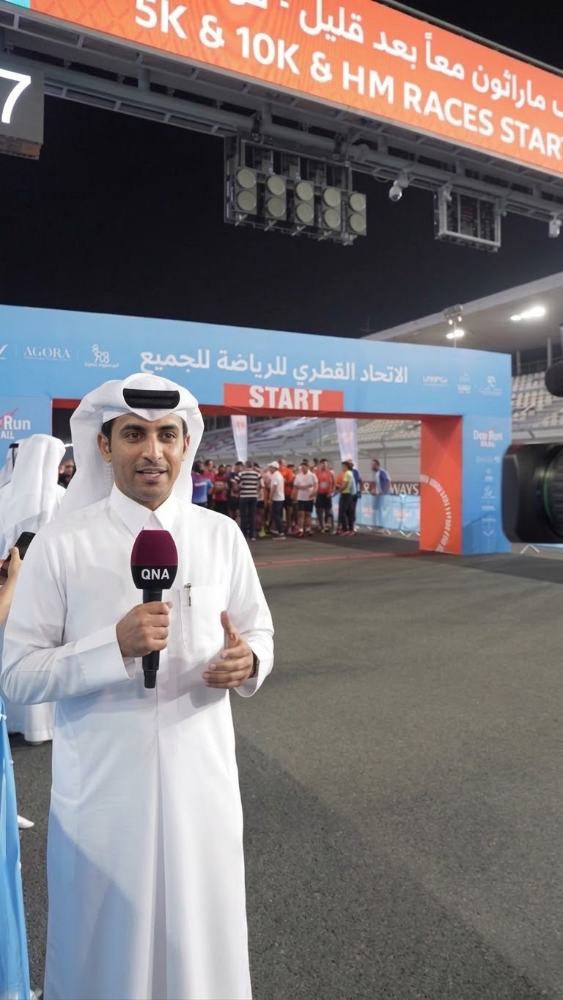

Concept Overview
The Virtual Reporter initiative introduces a hybrid journalism model that combines authentic, on-location video coverage with an AI-designed presenter embedded directly into real-world settings[span_0](start_span)[span_0](end_span). The concept delivers accurate, modern digital reporting while preserving complete journalistic integrity and local cultural identity[span_1](start_span)[span_1](end_span).
In-Scene Compositing
Renders a virtual reporter seamlessly into genuine on-location footage with dynamic scale, lighting, and shadow calibration[span_2](start_span)[span_2](end_span).
Consistent Digital Anchor
Maintains a single persona with a locked name, voice, facial features, and style to build long-term audience familiarity and institutional trust[span_3](start_span)[span_3](end_span).
Editorial Governance
All script preparation, voice generation, and visual outputs remain under full human editorial supervision prior to publishing[span_4](start_span)[span_4](end_span).
Visual Proof of Concept
Demonstrating spatial positioning across varied production environments:

Indoor Office Setting
Full-body digital presenter placement within an official agency office (UNHCR context) showcasing spatial scale and branding[span_5](start_span)[span_5](end_span)[span_6](start_span)[span_6](end_span).

Outdoor Field Setting
Medium-shot presentation at a sports marathon start line demonstrating dynamic ambient lighting and depth integration[span_7](start_span)[span_7](end_span)[span_8](start_span)[span_8](end_span).
Key Capabilities & Deployment
- National Event Coverage: Live forums, official conferences, cultural summits, and community events[span_9](start_span)[span_9](end_span).
- Multilingual Broadcast: Multi-language commentary (Arabic, English, and beyond) using the unified anchor persona[span_10](start_span)[span_10](end_span).
- Digital Channel Optimization: Short-form content engineered for QNA web platforms, social media feeds, and digital signage[span_11](start_span)[span_11](end_span).
- National Capability Building: Equipping local media teams with advanced generative workflows combining news production and AI tools[span_12](start_span)[span_12](end_span).